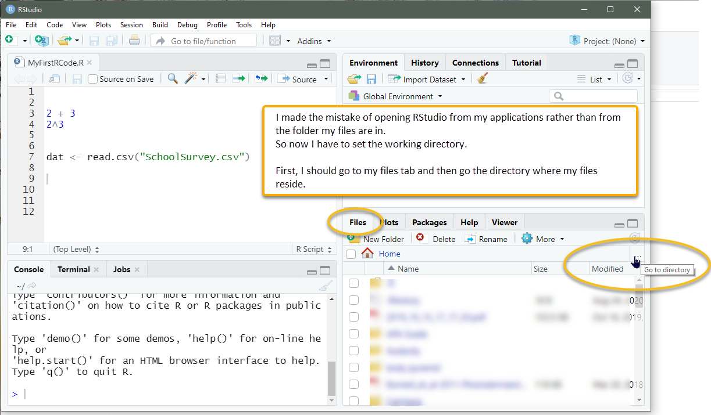
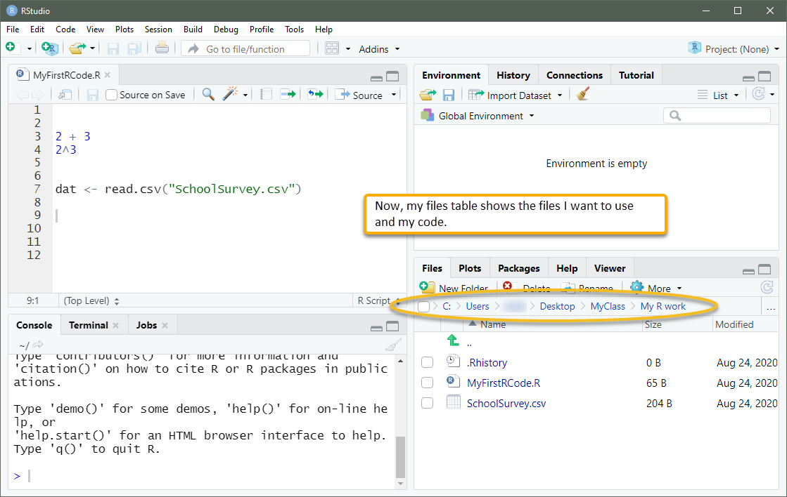
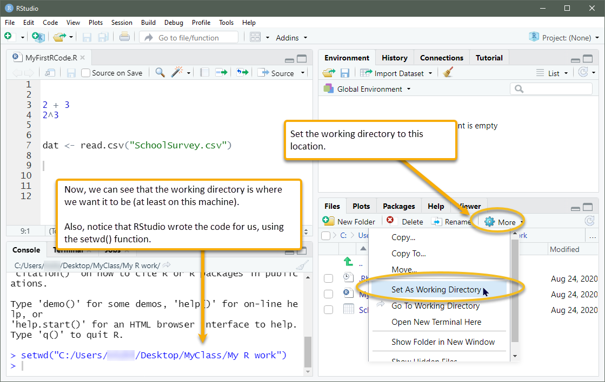

Part 3 Creating and re-opening an R script file
3.1 Create an R script file in your folder, then start RStudio by double-clicking that file
We typically write code in a script file, run it to be sure our coding is correct, then save the file to a location on our local machine so we can continue working on it another day. For a six-minute introductory video on this process, go to https://youtu.be/C8sP6rfrMAs.
There are at least two ways to create a new R script file:
- Open RStudio to get a blank source script page; then, save the file (using the
Filemenu), giving it a name with the extension.Rand selecting a directory on your computer where you want it to be saved (such as a folder for this class). After doing this, close RStudio. Then, navigate to the folder in which you saved your R script file and open it again by double-clicking on the file. You might need to right click on the file and useOpen Withto direct your computer to open the R file with RStudio.
-
From there, you should be able to also set your computer to always use RStudio for files with
.Rextensions. By closing RStudio, and then navigating to your folder to open the R file directly, our R session will automatically set the working directory to be that folder location. In other words, this is the lazy way (which I fully appreciate) because we can avoid having to manually set the working directory.
 A working directory is the folder location where R looks for files, such as data files, and saves outputted files, such as plots that we output or data that we save. Advice for lazy folks like me: Create a folder for each separate analysis. In that folder, place the R script file and the data file (CSV file, which we’ll describe in Part 5). This will simplify the process when you tell R which data file to use (because otherwise we have to specify a working directory). A working directory is the folder location where R looks for files, such as data files, and saves outputted files, such as plots that we output or data that we save. Advice for lazy folks like me: Create a folder for each separate analysis. In that folder, place the R script file and the data file (CSV file, which we’ll describe in Part 5). This will simplify the process when you tell R which data file to use (because otherwise we have to specify a working directory). |
- Go to your directory where you want to keep the file and create a new document with the
.Rextension.2 You might name your file something likeMyAnalysis.R.3 Open the file. As mentioned above, you might need to use Open With and set your computer to always open.Rfiles with RStudio.
You can, of course, also place an existing script file in a folder and start a new session of RStudio by clicking on that file. For instance, if you acquired some data and an R script file (from an online source, your instructor, or a colleague), you can place the files into your folder and open the script file from there. This will create the working directory in the right place (as long as RStudio was not already open).
3.2 If you need to set the working directory
Note that when you start an RStudio session from a folder location that does not include your data, such as if you access a shortcut on your desktop, you will need create a working directory by entering something like this in your script: setwd("C:/Users/Yourname/Desktop/Yourfolder").4
An alternative to using the setwd() function is to use RStudio’s GUI. So, if you have your data and your R script in a folder, but you’re unable to read the data (perhaps because you opened RStudio from your applications menu instead of clicking on the file in your folder), you can do this: Go to the pane that shows your files, plots, packages, and so forth. Open the files tab and navigate to the folder where your data reside by clicking on the ellipsis button ... on the right. After that, go to the More menu and select Set As Working Directory.

Now our files tab shows the folder we want (in this example, it’s a folder on the desktop).

Here’s the More directory, where Set As Working Directory can be selected.

Rather than dealing with all this working directory business, it is easier to place all of our files in a single folder and start an RStudio session by clicking on the .R file.5
On a PC, you can right click in a folder and create a new file, then change the extension from
.txtto.R.↩︎You might need to tell your computer to display the file extensions of files, such as
.docxfor Word docs and.Rfor R script files.↩︎The directory path depends on your operating system, how your folders are set up, and of course, where you want to save your file. If you want to see where your working directory is, use the
getwd()function.↩︎Another option is to use RStudio projects.↩︎